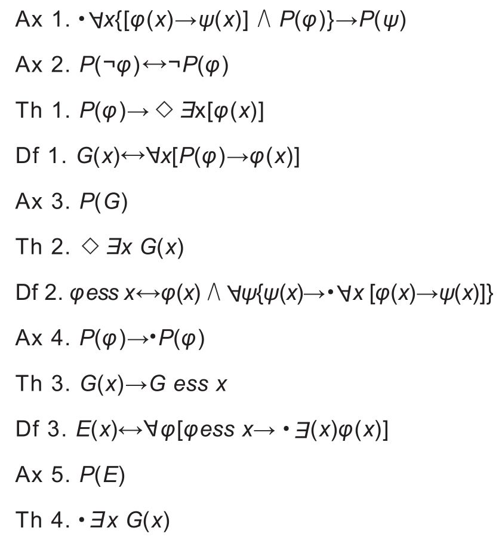

这一章我们主要讨论上帝是否存在，利用数学逻辑能不能证明上帝存在。物理学家海因茨·欧伯胡默（Heinz Oberhummer）声称，“证明上帝存在是绝不可能的”。但数学家库尔特·哥德尔（Kurt Gödel）却持相反意见，认为上帝存在可以通过逻辑证明。
哥德尔是一位传奇般的逻辑学家。与爱因斯坦相同，他也曾在普林斯顿大学任教。当时，这两位天才般的人物结识，成为挚友。爱因斯坦曾说，他有时去研究所只是为了能和哥德尔一同回家，在回家路上畅快交谈。
哥德尔死后，人们在他的遗产中发现了证明上帝存在的数学证据。他害怕自己的数学论述成为支持信教的证据，因此，他并没有公开发表自己的文章。但他死后，他的著作中有关上帝存在的证明却引起了科学界历史性的轰动。哥德尔在世期间就凭借他的“不完全性定理”举世闻名。据说他是在假想命题“我（命题本身）是不可能被证明的”的证明过程中偶然发现“哥德尔定理”的。
我们可以这样分析：如果“此命题是不可能被证明的”这句话是真的，那么人们不能证明此命题——如它（命题）自己声称的那样；如果这个命题是错误的，则代表着“此命题可以被证明”。但是如果人们真的如此做了，即真的证明了此命题是可以被证明的，其实就是证明了“此命题是不可能被证明”是可以被证明的。这是个逻辑学上的悖论，精准的描述应为：只有当一个命题不能被证明的时候，它才是真的——因此存在不能被证实的真理。这就是哥德尔定理的核心，而哥德尔不完全性定理也因为完全打破了以往人们对定理的认知，将数学带入了一个严重的困境中。
从某个时刻起，哥德尔开始用逻辑去思考上帝的存在。他证明上帝存在的出发点在于莱布尼茨的“积极属性”（positive property）概念，即当一个“属性”不与任何其他属性逻辑上相悖时，这个属性就是“积极的”。接着，他又定义了“必然性”（necessity）：必然性是指一个事物与它的对立面逻辑上相矛盾，即肯定的事物的否定必然是否定的。
哥德尔证明上帝存在的逻辑学证明由三个定义、五个公理与四个定理组成，并且在第一个定义中哥德尔定义了什么是上帝。在哥德尔的证明过程中，定义是对于概念的确认；公理是证明过程的前提，这些公理被视为无须论证的真实；定理是基于公理借助有效的逻辑推理而得到的证明为真的论断。
下面列举了哥德尔证明上帝存在的文字过程。你有兴趣钻研一下吗？
定义一：当某一生物所有的属性都是积极属性时，这个生物具有神性。
定义二：当某一生物的某一属性必然地蕴含了其他所有属性时，这一生物的这一属性称为本质属性。
定义三：当某一生物的所有本质属性都是必然的时，一个生物必然存在。
公理一：任何一个属性只可能是积极的或非积极的。
公理二：必然地拥有积极属性的自身也是积极的。
定理一：如果一个属性是积极的，那么可能存在某一生物，它拥有这个属性。
公理三：神性是积极属性。
定理二：在某一世界中存在一个神性的生物是有逻辑上的可能性的。
公理四：任何的积极性都是必然积极的。
（这意味着必然性存在于一个属性的积极性中。因此，必然性本身是一个积极属性。）
定理三：如果一个生物具有神性，那么它的神性是一个本质属性。
（这条定理意味着，一个生物最多可能存在一个神性。）
公理五：必然存在的属性是积极的。
定理四：当神性生物的存在是有逻辑上的可能性的话，那它的存在是必然的。
（因为我们在定理二里面已经确定神性的存在是有逻辑上的可能性的，所以这条定理说明神性生物必然存在。）
两位信息学家借助电脑验证了哥德尔的推理过程，结果是这个证明过程在逻辑上完全正确。
哥德尔关于上帝存在的本体论证明方式原本是一串非常复杂的公式，如下所示，哥德尔论证最后称上帝为G（x）：

你认为这个证明过程怎么样？你相信G(x)吗？你又是如何评价哥德尔证明上帝存在的过程的？但有一件事是肯定的：在我上的宗教课上，亚伯拉罕、以撒和雅各布这三位神是完全不同的。